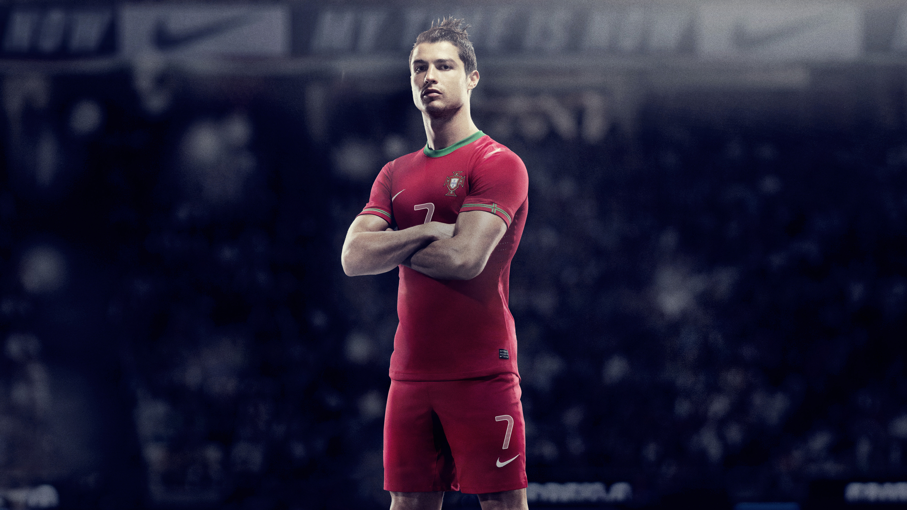

Cristiano Ronaldo
Cristiano Ronaldo is one of the greatest footballers of all time, celebrated for his incredible skill, athleticism, and goal-scoring records. Known for his relentless work ethic, determination, and leadership on and off the field, Ronaldo has achieved remarkable success throughout his career, winning numerous domestic titles, Champions League trophies, and individual accolades such as multiple Ballon d'Or awards. His dedication to constantly improving and his ability to perform in high-pressure situations have cemented his legacy as a global football icon.